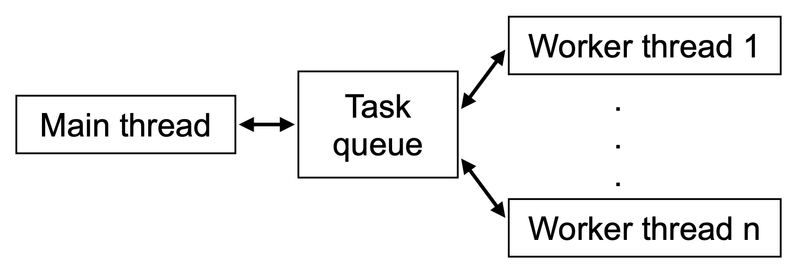
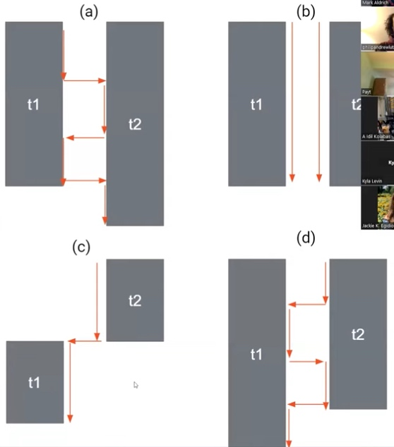

Concurrent programming is when programs have multiple threads of control, that could be interleaved or cound even happen simultaneously.
Moore's law, every 18 months, transistor density would double.
Dennard scaling, the power usage is about the same, and everything was getting smaller, it was getting faster.
When you run CPUs today, dissipating the heat from the CPU is the stumbling block. That will prevent CPUs from getting faster. We cannot get the heat out them fast enough. So we need to move to multi-core CPUs.
Concurrency in the OS
Each process is isolated from the others. Each processes cannot directly interfere with each others' memory.
In contrast, threads live within a process and share memory. They may interfere with each other.
Why not Concurrency?
- Concurrent software is harder to think about
- Concurrency adds overhead
Basic Threads in Java
- sleep(n) waits n milliseconds
- t.join() blocks until thread t finishes
- Within threads, ordering applies
- Across threads, only ordered when
- One thread starts another
- One thread waits for another fo finish(join)
Ways to Create Threads
Approach 1: Subclass Thread and implement run():
public class Tick extends Thread {
public void run() {
for (int i=0; i<10; i++) {
System.out.println("tick " + i);
try { sleep(1000); }
catch (InterruptedException e) { } }}}
public class Main {
public static void main(String[] args) {
Thread t = new Tick();
t.start(); // t doesn’t run until started! try { t.join(); }
catch (InterruptedException e) { } System.out.println(“Main thread exit”);
}}}
Approach 2: Anonymous inner class
Thread t = new Thread() {
public void run() { ... };
}
Approach3:Implement Runnable
public class Tick implements Runnable {
public void run() { ... }
}
public class Main {
public static void main(String[] args) {
Thread t = new Thread(new Tick());
...
}}
Data Races
public class Racer extends Thread {
private static int cnt = 0;
public void run() { int y = cnt; cnt = y+1; }
}
public class Main {
public static void main(String[] args) {
Thread t1 = new Racer();
Thread t2 = new Racer();
t1.start(); t2.start();
}}2
No guaranteed order among the reads and writes of cnt across threads.
JVM can execute statements with any schedule
- A schedule is the sequence in which threads are interleaved
- Any schedule compatible with happens before is allowed.
The JVM may execute the same code with different schedules on different runs
Once is not an atomic operation, data races will happen.
Mutual Exclusion with Locks
We need a way to guarantee
{ int y = cnt; cnt = y+1; }
runs without any other thread interfering
Most basic way to achieve this: locks
public interface Lock {
void lock();
void unlock();
// some other stuff
}
public class ReentrantLock implements Lock { ... }
Only one thread can hold a lock at once.
Avoiding Data Taces with Locks
public class Racer extends Thread {
private static int cnt = 0;
private static Lock lock = new ReentrantLock()
public void run() {
lock.lock();
int y = cnt;
cnt = y+1;
lock.unlock();
}}
Basic Locking Design Pattern
- Identify memory that is shared between threads
- Non-shared memory doesn’t need locks
- (In Java, local variables are never thread-shared!)
- Check whether that memory might be written to whilc it is shared
- If never written, then sharing is perfectly safe!
- For written, shared memory, create a lock or reuse an existing one
- Wrap critical sections for that variable with lock acquire and release
- Critical section = code blocks that must be atomic, i.e., not interfered with by other threads manipulating memory.
public class A extends Thread {
private static int cnt = 0;
public void run() { cnt++; }
}
public class Main {
public static void main(String[] args) {
Thread t1 = new A();
Thread t2 = new A();
t1.start(); t2.start();
}}
In this example, cnt is thread-shared and writable.
Different Locks Do not Interact
Lock l = new ReentrantLock();
Lock m = new ReentrantLock();
int cnt;
Thread 1
l.lock();
cnt++;
l.unlock();
Thread 2
m.lock();
cnt++;
m.unlock();
Above is shorthand for creating shared two reentrant locks and one shared field, and then running th ecode shown in two concurrent threads
- This program has a data race
- Threads only block if they try to acquire a lock held by another thread
Reentrant Lock Example
public class Shared {
static int cnt;
static Lock l = new ReentrantLock();
void inc() { l.lock(); cnt++; l.unlock(); }
int retAndInc() { l.lock(); int temp=cnt;
inc(); l.unlock(); return cnt; }
}
Shared s = new Shared();
Here retAndInc calls inc, and both get same lock.
Without reentrant locks, call to inc would block.
Deadlock
Deadlock occurs when some set of threads can never be scheduled because thet are all waiting for a lock that will never be released
Avoiding Deadlock
- Basic principle: Don’t get fancy with lock design
- Fewer locks = less potential for deadlocks
- But, less concurrency, since more mutual exclusion
- Standard (bad) pattern in development of concurrent software
- First, assume program will be sequential
- Then, realize it needs to be made concurrent
- Add a single global lock for all shared memory
- Realize performance is bad, start refactoring into smaller locks
- Make a lot of mistakes and introduce data races
- Assume data races are benign until years later when this assumption comes back to cause headaches
Another Case of Deadlock
static Lock l = new ReentrantLock();
void fileAccess() throws Exception {
l.lock();
FileInputStream f = new FileInputStream(“foo.txt”); // do something with f
f.close();
l.unlock();
}
What happens if exception related to f raised?
- l will never be released!
- Will likely cause deadlock
Finally Unlock
Solution:use finally block
static Lock l = new ReentrantLock();
void fileAccess() throws Exception {
l.lock();
try {
FileInputStream f = new FileInputStream(“foo.txt”);
// do something with f
f.close();
} finally {
l.unlock(); }}
(Ignore whether f.close should be in the finally block...)
Java Synchronized Keyword
- Super common pattern in Java:
- Acqurie lock at beginning of block, do something, then release lock(even if exception raised)
- Java has a language construct for this pattern
synchronized(obj) { body }- Obtains lock associated with obj
- Every Java object has an implicit associated lock
- The lock is not the same as the object! The object is just a way to name the lock.
- Executes body
- Release lock when stmts exists
- Even if there's a return or exception
- Obtains lock associated with obj
Synchronized Example
static object obj = new Object();
void foo() throws Exception {
synchronized(obj) {
FileInputStream f = new FileInputStream(“foo.txt”);
// do something with f
f.close();
} }
Object vs. Its Lock
- An object and its associated lock are different!
- Holding a lock on an object does not affect what you can do with that object
Synchronizing on this
Synchronized Methods
Markingamethodassynchronizedisthesameas synchronizing on this in its body
The following two programs are the same
class C {
int cnt;
void inc() { synchronized(this) { cnt++; } }
}
class C {
int cnt;
synchronized void inc() { cnt++; }
}
Synchronized Static Methods
Common Synchronized Patterns
For a typical, thread-shared data structure
- Make the fields private
- No code other than the class’s methods can access them directly
- Make all instance methods sychronized
- Avoids data races, method bodies are typically atomic
- Each instance has its own lock, but also its own fields
- Watch out for class (static) methods and fields
- Won’t synchronize on the same object as instance methods
- Class fields shared across instances, so synchronized instance methods won’t share a lock when accessing them
- Or...
- Make class instances immutable!
- If fields are not written after objects are shared, no possible
Producer/Consumer Pattern
- Threads often want to communicate through some kind of shared buffer
- A producer puts data into the buffer
- A consumer pulls data out of the buffer
- Examples
- Server gets stream of requests, passes to consumer threads.
- Worker threads share data with each othere
- Goals
- Support one or more producers, one or more consumers Buffer is fixed size, so it might become empty or full
- Producer should block on full buffer; consumer should block on empty buffer
- No busy waiting (threads should block rather than poll)
Broken Producer/Consumer
class Buffer {
Object buf;
void produce(Object val) { buf = val; }
Object consume() { return buf; }
}
Buffer b = new Buffer();
// Thread 1
b.produce(42);
// Thread 2
Object o = b.consume();
- Data race because buf accessed across threds with no locks
- Will only work if Thread scheduled before Thread 2
- Completely broken if more than one profucer of consumer, since buffer only holds one element and gets overwritten.
Conditions
interface Lock { Condition newCondition();. ... }
interface Condition { void await();
void signalAll(); ... }
- Condition created from a Lock.
- await must be called with its lock held.
- Releases the lock
- But not any other locks held by this thread
- Adds this thread to wait set for lock
- Block the thread
- Releases the lock
- signalAll called with its lock held
- Resume all threads on lock's wait set
- Those threads must reacquire lock before continuing.
- This a part of await; you don't need to do it explicitly.
Producer/Consumer with Conditions
Correct code!
class Buffer {
Object buf; // null if empty
Lock l = new ReentrantLock();
Condition c = lock.newCondition();
void produce(Object val) {
l.lock();
while (buf != null) { c.await(); }
buf = val;
c.signalAll();
l.unlock();
}
Object consume() {
l.lock();
while (buf == null) {c.await(); }
Object o = buf;
buf = null;
c.signalAll();
l.unlock();
return o;
}
Need for While Loop
- Handles case of more than one producer or consumer
- E.g., consider one producer, two consumers Suppose both consumers reach await() call
- Both will be in wait set
- Now one producer fills buffer
- Both consumers woken up
- But only one can read from buffer
- Alternative to avoid:Condition#signal
- Only wakes up one awaiter
- Tricky to use correctly—all waiters must be equal, and exceptions must be handled correctly
- Easier to use signalAll and a loop
Synchronized Wait/NotifyAll
obj.wait() //like await()
- Must hold lock associated with obj
- Releases that lock (and no other locks)
- Adds current thread to wait set for lock
- Blocks the thread
obj.notifyAll() //like signalAll()
- Must hold lock associated with obj
- Resumes all threads in lock's wait set
- Those threads must reacquire lock before continuing
- (As with signalAll, this is part of notifyAll, you don’t do this explicitly)
Producer/Concumer with Wait
Correct code!
class Buffer {
Object buf; // null if empty
synchronized void produce(Object o) {
while (buf != null) { wait(); }
buf = o;
notifyAll();
}
synchronized Object consume(){
while (buf == null) { wait(); }
Object tmp = buf;
buf = null;
notifyAll();
return tmp; }
Thread Cancellation
- What if we need to stop a thread in the middle?
- E.g., User clicks the "cancel button"
- E.g., Thread's computation no longer needed
- A not great idea: kill the thread immediately
- What if thread is holding a lock or other resource?
- What if shared data is in an inconsistent state?
- A better idea: politely ask the thread to kill itself.
- Thread#interrupt() — set thread’s interrupted flag
- Thread#isInterrupted() — check if interrupted flag set
Handling Cancellation
public class Processor extends Thread {
public void process() {
while (!Thread.interrupted()) {
// do some amount of work
}
// do clean up here before exiting
}
}
Pop Quiz
int x = 0;
int y = 0;
//Thread 1
x=1
j=y
//Thread 2
y=1
i=x
It is possible for i=j=0! How?
Write Buffering
On multi-core processors, there may be a write buffer between a thread and main memory:
- Assignment x = 1 from Thread 1 gets written to buffer
- Main memory still has old value 0 for x
- At some point later, buffer gets copied into main memory
Buffer only guaranteed to be visible to Thread 2 if Thread 1 releases a lock that Thread 2 then acquires.
That is, locking guarantees visibility of writes
Visibility via Locking
If Thread 1 releases lock that Thread 2 acquires, then all shared variables written by thread 1 before the unlock are guaranteed visible to thread 2 after the lock.
Code Reordering
- Even without write buffers, schedule above possible
- Reason: compiler optimization
- Observe no dependency between x=1; j=y;
- Thus, compiler can reorder them to j=y; x=1;
- Similarly with thread 2, yielding bad order
Volatile
A shared field marked can be accessed with locks. Writes can be visible across threads.
volatile int x = 0;
No atomicity!
Generally, use locking instead of volatile unless you are an expert.
Futures
- Create a parallel task
- Sometimes called an asynchronous task
- Continue the current thread
- Sometime in the future, wait for task's result
- But main thread does work in the meantime.
- Useful for Latency Hiding
Thread Pools
- In theory, can create a thread whenever needed
- In practice, threads on most OSs are not super lightweight
- Creating hundreds or thousands of threads won't work
- OS will slow to a crawl, spending all its time context switching
- Practical solution: create a fixed pool of threads
- Size of poll based on knowledge of system resources
- E.g. number of available cores
- Typically a configuration option for the program.
- Size of poll based on knowledge of system resources
- Most basic policy for using a pool:
- If we need to do work, grab an available thread to do it.
- If no thread is available, block
Worker Threads
- Thread pool us a set of workers that can do tasks
- Main thread creats tasks and feeds the into a queue
- Free worker thread pulls next task from the queue.
- Worker threads block if no tasks available.

Thread Pools in Java
class Executors {
// Create a fixed size thread pool
static ExecutorService newFixedThreadPool(int nThreads);
}
interface ExecutorService {
// submit a task for execution
<T> Future<T> submit(Callable<T> task); // with result
Future<?> submit(Runnable task);
}
interface Callable<V> {
V call(); }
interface Runnable {
void run();
}
Blocking Queue
No need to implement producer-consumer yourself!
interface BlockingQueue<E> {
// add/remove from queue, blocking if not possible
void put(E e);
E take();
// add/remove from queue, returning immediately
// whether possible or not
boolean offer(E e); // true if success
E poll(); // null if empty
// as above, but with timeouts
boolean offer(E e, long timeout, TimeUnit unit);
E poll(long timeout, TimeUnit unit);
}
Barriers
- Common numerical computation pattern
- All threads block at key points to exchange info
- E.g., weather simulation needs to exchange info at boundaries between geographic areas.
Message Passing
- Threads in Java are shared memory concurrency
- Another model: message passing concurrency
- Threads do not have access to the same memory
- Threads send messages to each other to exchange data
- Using fancies version of BlockingQueue
- Pros
- More natural for many supercomputer architectures and distributed systems
- No possibility of data races
- Cons
- Atomicity still problematic
- Inefficient to exchange large amonts of data.
Multithreading Review Session
Concurrency vs. Parallelism
-
Concurrency
- Multiple threads can execute
- They can take turns, or run in parallel
-
Parallelism(one form of concurrency)
- Threads truly run in parallel
- Threads truly run in parallel
Which of these thread orderings can happen？

All of them! Threads can run in order, out of order, or simultaneously.
What is a data race?
Three Conditions
- Shared memory
-
1 access is a write
- No lock protecting data
The following example has data race.

The following code also has a data race. Thread t1 and t2 has their own lock. They lock nothing on the static variable.
If change this to Counter.class, then there will be no data race.

public synchronized void run() {
cnt++;
}
will be the same as
public void run(){
synchronized(this){
cnt++;
}
}
But this system cannot work in a pruducer/consumer model because the dead lock will cause the application break down.
Like the board and deboard situation.

Between while(b.occupied) and b.occupied=true. All threads could pass this while loop and do following stuff, which could cause the data race. Multiple people can occupy the bathroom at once.
In java, you cannot simulate a lock by yourself.
Synchromized could protect this(Person) but not bathroom.
This time, there is no data race on bathroom!
Await/signalAll

Inside the lock, there is still wait and signal happening
Once call await, jvm will put that thread into sleep until signalAll happen to wake up threads that fall into sleep.